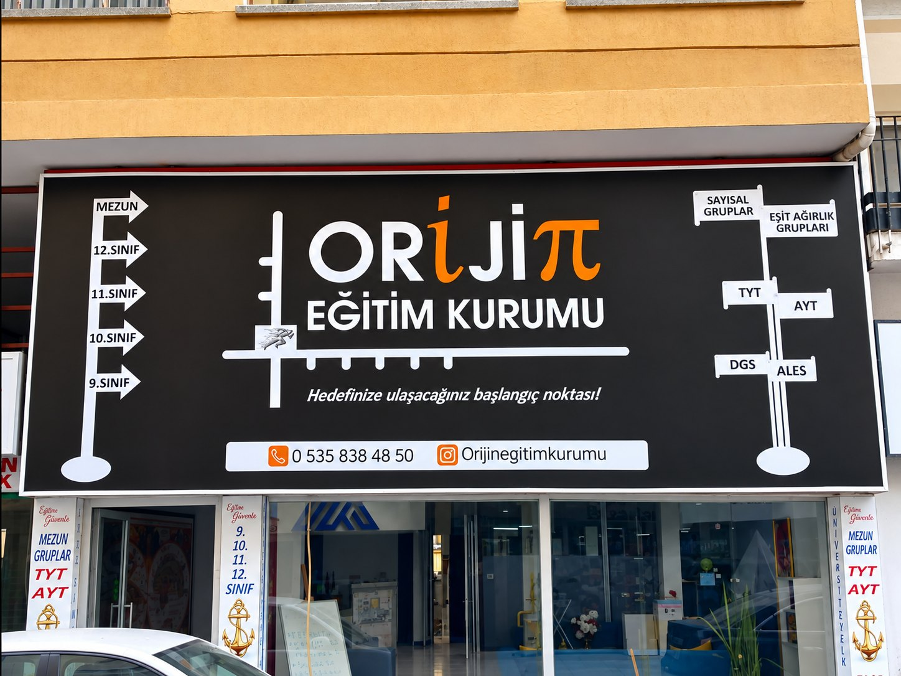
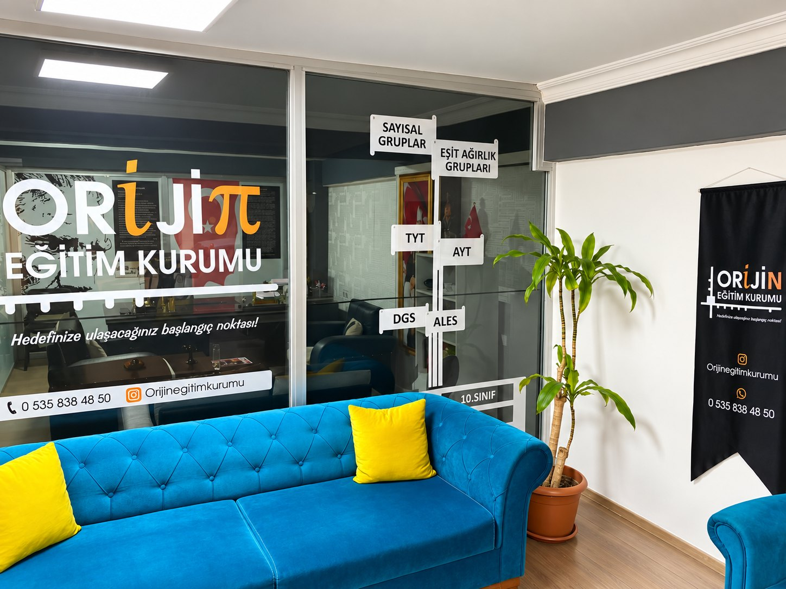
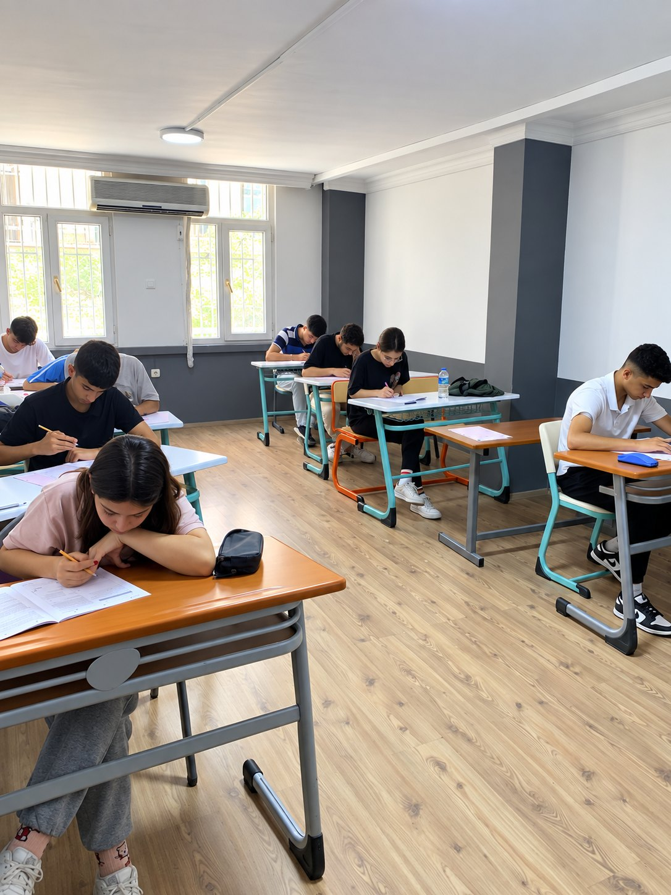
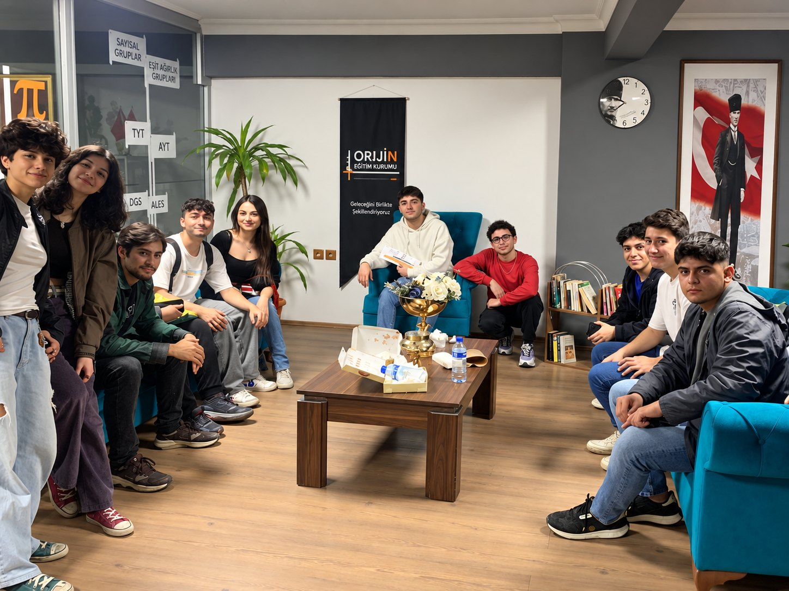

Şeffaflık
Öğrenci ve veli, sürecin hangi aşamada olduğunu açık ve anlaşılır biçimde görür.
ORJİN Eğitim Kurumu; akademik öğretimi, ölçme-değerlendirmeyi ve bireysel rehberliği aynı öğrenci deneyiminde birleştirir.
Her öğrencinin güçlü ve geliştirilmesi gereken yönlerini netleştirir, hedefe göre sade ve uygulanabilir bir çalışma düzeni kurarız.
Öğrencinin akademik yolculuğunu tek bir sonuç gününe değil, her haftanın gelişimine göre yönetiyoruz.
Öğrenci ve veli, sürecin hangi aşamada olduğunu açık ve anlaşılır biçimde görür.
Başarıyı günlük alışkanlıkların, tekrarın ve doğru tempo yönetiminin sonucu olarak görürüz.
Sorunları büyümeden fark eden, ulaşılabilir ve çözüm odaklı bir eğitim ekibi hedefleriz.
Her öğrenciyi kendi başlangıç noktası ve kendi ilerleme verisi üzerinden değerlendiririz.
Kurum, öğretmen ve öğrenci görevlerinin net olduğu sürdürülebilir bir sistem kurarız.
Çalışmanın nedenini görünür kılar, kısa ve uzun vadeli hedefleri birlikte yönetiriz.

Kurumun güçlü ve akılda kalıcı kimliğini yansıtan dış görünüm.

Öğrenci ve velilerin ilk adımda güvenle karşılandığı düzenli giriş alanı.

Ders, deneme ve soru çözümü süreçleri için sakin ve verimli sınıflar.

Samimi, motive edici ve iletişimi güçlü bir öğrenci atmosferi.
9. sınıftan mezun grubuna kadar YKS yolculuğunu; doğru program, akşam kampları, etütler ve düzenli rehberlikle birlikte planlayalım.
Program, seviye ve çalışma düzeni için kısa bir tanışma görüşmesi planlayın.
Görüşme planla